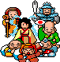

Un omaggio non ufficiale al classico arcade TAITO del 1986: fedele all'originale, con la sua grafica e una moderna.An unofficial tribute to TAITO's 1986 arcade classic: faithful to the original, with its graphics and modern ones.
Fedele all'arcadeFaithful to the arcade
Movimento, tiro, nemici, collisioni e livelli sono ricostruiti leggendo il comportamento del gioco da sala fotogramma per fotogramma, non a memoria. Anche quale figura compare a ogni istante è quella dell'originale.Movement, shots, enemies, collisions and stages are reconstructed by reading the coin-op's behaviour frame by frame, not from memory. Even which picture shows at each instant is the original's.
Due graficheTwo graphics
Il tasto G (o il pulsante GFX) passa a gioco in corso dalla grafica originale del 1986 a quella moderna, ridipinta con intelligenza artificiale generativa sopra le figure originali: stesse sagome, stesse posizioni.Key G (or the GFX button) switches, while playing, between the original 1986 graphics and the modern ones, repainted with generative artificial intelligence over the original pictures: same silhouettes, same positions.

Due colonne sonoreTwo soundtracks
Il tasto M (o il pulsante SND) passa dai suoni e dalla musica dell'arcade, catturati dal suo chip sonoro, a una versione moderna generata a partire da quelli.Key M (or the SND button) switches between the arcade's sounds and music, captured from its sound chip, and a modern version generated from them.
Si gioca nel browserPlays in the browser
La prima scena: frecce o WASD per muoversi, Z per l'ofuda, X per il bastone. Su telefono e tablet compaiono una leva e due pulsanti a schermo. Ci sono fantasmi, fiamme, il viandante e il bonus nascosto; mancano ancora punteggio a schermo e il boss. Le figure moderne dei nemici nuovi sono in prova.The first scene: arrows or WASD to move, Z for the ofuda, X for the wand. On phones and tablets a stick and two buttons appear on screen. Ghosts, flames, the wanderer and the hidden bonus are in; on-screen score and the boss are still missing. The modern pictures of the new enemies are on trial.